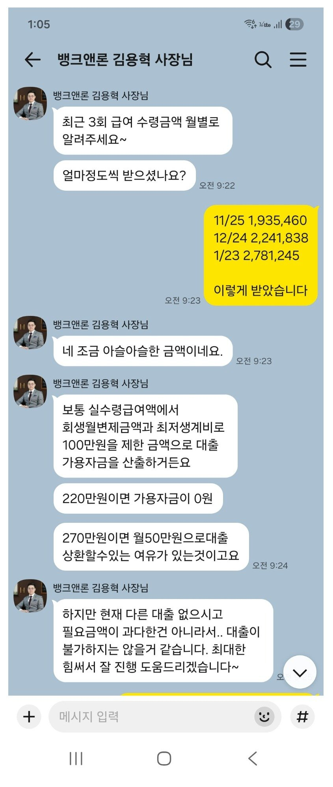
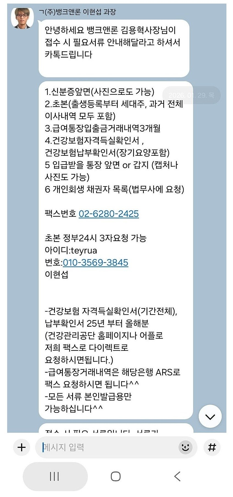
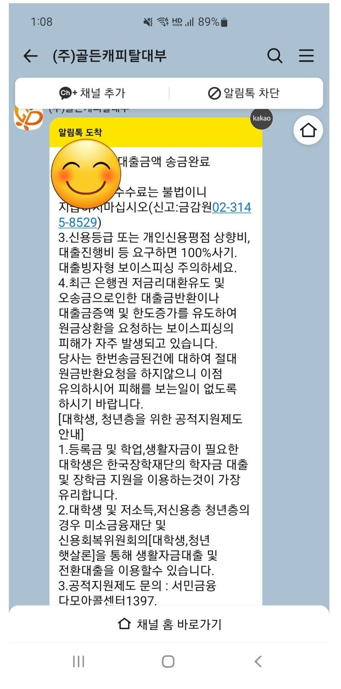

[개인회생자대출 ] 재직기간이 짧고 계약직 기간의 적은 급여라 대출 진행 가능할까했는데.. 대출 성공 후기



대출 조건
재직형태 : 직장인
재직기간 : 3개월
사대보험 가입유무: 유
소득 : 건보기준 약 3000만원
신용등급 : 나이스 350 kcb 100
기대출 : 없음
필요서류 : 신분증, 초본, 급여통장 거래내역서, 건강보험 자격득실확인서,납부확인서, 통장사본, 채권자목록
후기
재직기간이 짧고 계약직 기간의 적은 급여라 대출 진행 가능할까했는데
김용혁 사장님, 이현섭 과장님 도움 덕에 쉽게 대출 진행할 수 있었습니다.
정말 친절하시게 상담해주시고 가용자금 산정방식도 설명해주셔서 이해가 빨랐습니다.
다시 한번 도움주셔서 감사 인사 드립니다!
https://cafe.naver.com/cityman88/310028